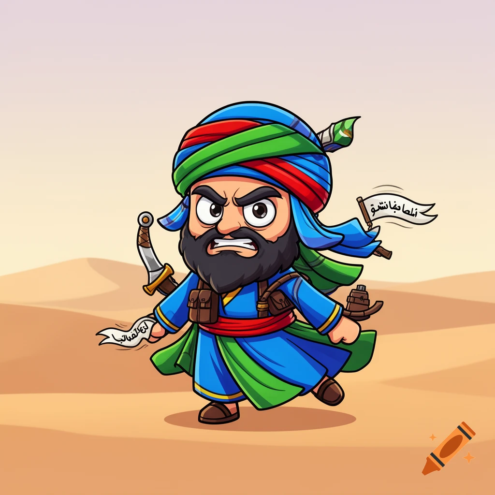

💣 JIHAD
Rol informatie
- Roletype: Neutral Killing
- Factie: Jihad
- Unique: Ja
- Attack: Powerful (Explosion), Basic (Debris)
- Defense: Basic
🎯 Doel
Blijf als laatste factie over.
⚙️ Acties
- Als er niemand geradicaliseerd is: radicaliseer een speler
- Als er wel iemand geradicaliseerd is: stuur deze naar een speler om een explosie te veroorzaken
📜 Uitwerking
- Jihad kan zichzelf niet radicaliseren.
- Rollen die roleblock immuun of control immuun zijn kunnen niet geradicaliseerd worden.
- Het doelwit krijgt niet te horen of radicalisatie gelukt is.
- De Jihad krijgt wel bericht of radicalisatie gelukt is.
- Bij een explosie krijgen de geradicaliseerde speler en het doelwit een Powerful attack.
- Alle andere bezoekers worden geraakt door puin en krijgen een Basic attack.
🖼 Afbeelding

⬅ Terug naar overzicht